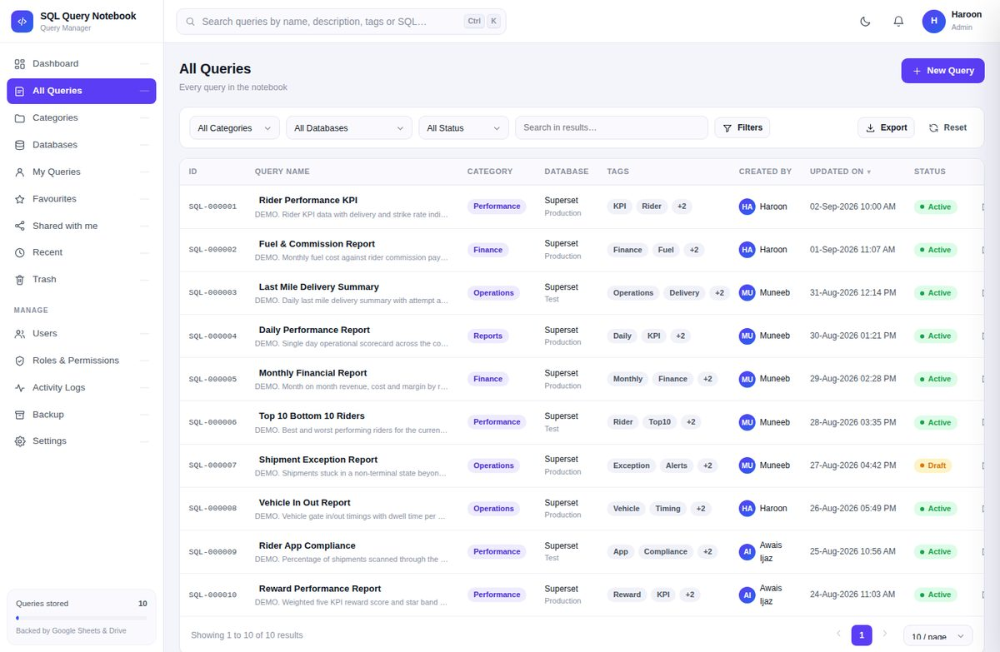

Stop hunting through Drive folders and chat history for the right version. Search, version, share and audit your team's SQL — on infrastructure you already pay nothing for.
The demo runs on ten example queries in your browser. Nothing is saved, nothing is sent anywhere.
1-- weekly rider strike rate 2SELECT 3 r.rider_id, 4 r.rider_name, 5 COUNT(*) AS shipments, 6 SUM(s.delivered) AS delivered, 7 ROUND(SUM(s.delivered) * 100.0 8 / COUNT(*), 2) AS strike_rate 9FROM riders r 10LEFT JOIN shipments s ON r.rider_id = s.rider_id 11WHERE s.ship_date >= CURRENT_DATE - 7 12GROUP BY r.rider_id, r.rider_name 13ORDER BY strike_rate DESC;
It stores, versions and finds SQL. It never connects to a database and never runs your queries — you copy the SQL into whatever you already have permission to run it in.
Full text across names, descriptions, tags, authors and the query body itself. Remember a table name but not the query name? That still finds it. Ctrl+K from anywhere.
Every edit is an immutable version with a line-by-line diff. Restoring an old version creates a new one — the current version is never destroyed, so an undo is itself undoable.
Four roles across a 21-permission matrix an admin edits live. Hidden buttons are a courtesy — every one has a matching server-side refusal.
Grant VIEW or EDIT to named colleagues, with an optional end date and an email notice. Links are shortcuts, never keys — recipients still sign in and still pass every check.
Append-only log of every login, view, copy, edit, delete and permission change — including the denied attempts, which are the interesting ones.
Not a shrunken desktop — a real mobile layout with cards, a bottom bar and SQL that scrolls inside its own box. Light and dark throughout.

The web app runs as you, so it can read the spreadsheet while your users have no access to it at all. That single deployment setting is what the whole permission model rests on.
The browser never decides anything. All 57 API endpoints pass
through one function that resolves identity server side and checks permissions.
Any role, userId, email or
permissions field sent from the browser is ignored.
| Role | Can do | Typically |
|---|---|---|
| Admin | Everything, including users, roles, settings and backups | You, plus one backup person |
| Manager | Create, edit and delete any query; restore; export | Team leads |
| Editor | Create and edit their own queries; share | Analysts who write SQL |
| Viewer | View, search and copy only | Everyone else |
About 25 minutes start to finish. No coding, no server, no command line. The full manual walks through all twelve steps with a tick-off checklist.
Create a Google Sheet, open Extensions → Apps Script.
Paste Code.gs and Index.html, then replace the manifest.
Run setupSystem(). It builds all 14 tabs, the roles and the Drive folders.
Deploy as a web app, add your team, switch on the maintenance jobs.